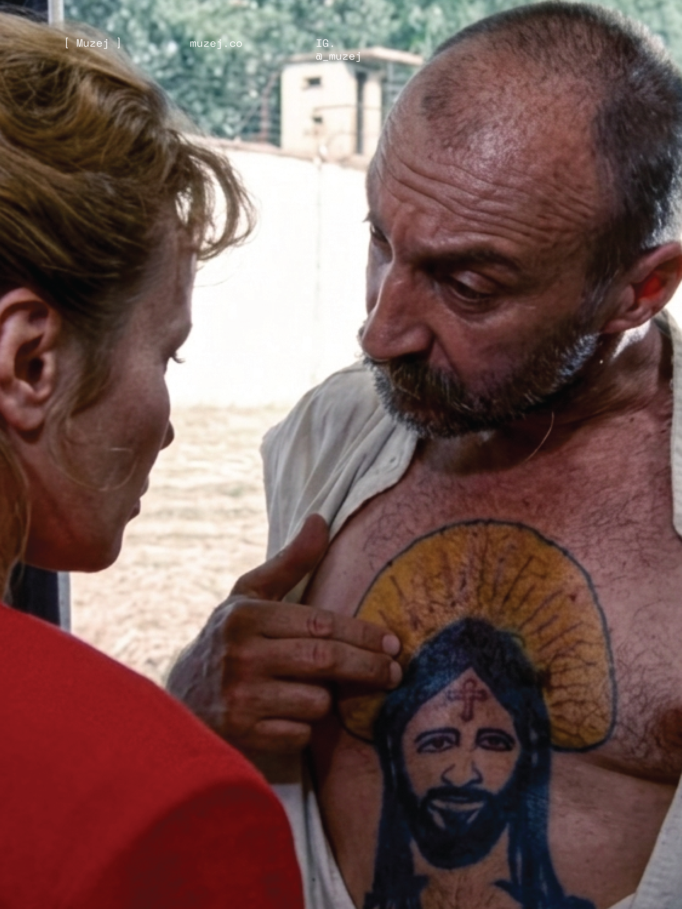
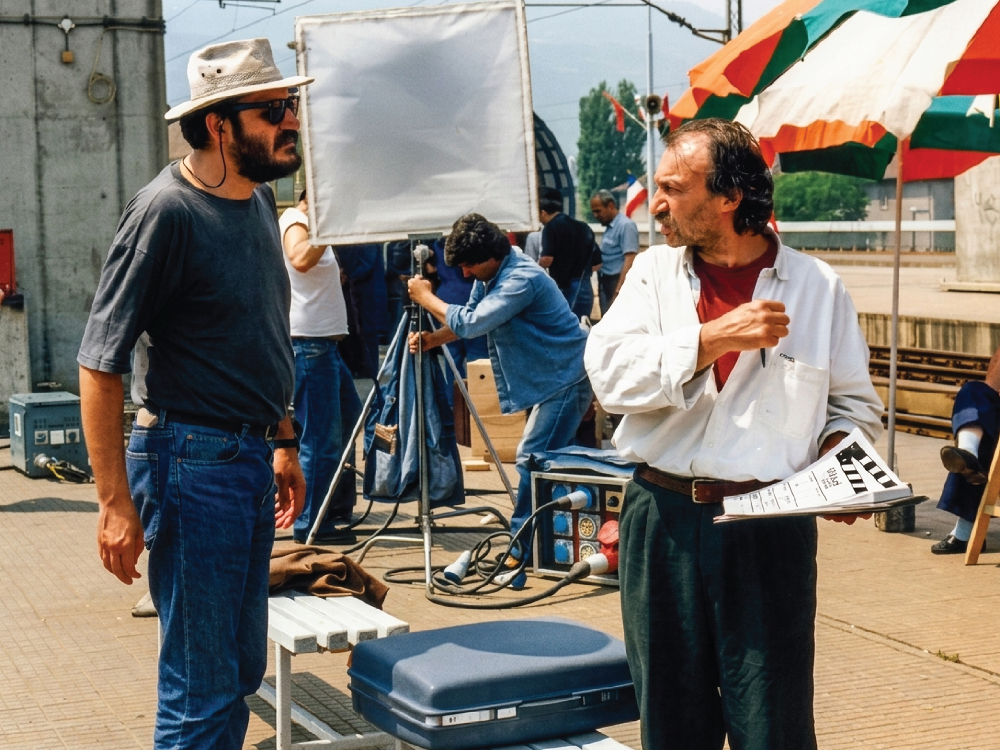

A film, when made with a clear authorial position, is not only a work of art but also an active social act. Stole Popov's film is a rare example of a work that created an intense charge of ideas and emotions at a time when society was on the verge of radical change.
"Tattoo" does not offer comfort; on the contrary: it forces the viewer to confront things: with the system, with violence, with individual responsibility. What makes the film particularly relevant today is the feeling that it does not belong exclusively to its time. More than three decades later, it seems contemporary, not because reality has not changed, but because many of the questions that were opened have remained unresolved.
Black humor and the absurd are not used only as stylistic devices, they serve as mechanisms for exposing a deep social dysfunction.
